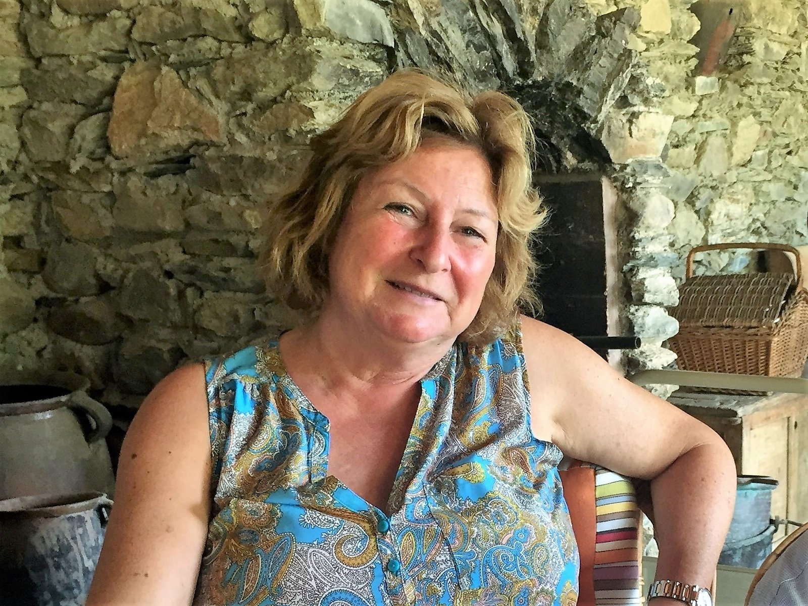

Über mich

Patricia Luber-Laporte
Geboren in Deutschland, aufgewachsen in Frankreich, nach Abschluss meines Studiums der Sprachen und der Betriebswirtschaft zurück in Deutschland, zuerst in München, dann in Köln.
Kunst und Malerei begleiten mich seit meiner Jugend. Anfänglich interessierte mich insbesondere die Seiden- und Aquarellmalerei. Später wandte ich mich dem Zeichnen mit Bleistift und Kohle und der Ölmalerei zu, später dem Acryl.
Hier in Köln besuche ich regelmäßig Malkurse, unter anderem bei Bettina Mauel, Imke Pitro-Riedel, Kaikaoss, Lucian.
Zuletzt habe ich ein 3 jähriges Intensivstudium an der freien Kunstakademie arte fact Bonn absolviert.
Meine derzeit am häufigsten angewandten Techniken sind Aquarell und Öl. Meine bevorzugte Motive sind Landschaften, Blumen, Stillleben und Menschen. Inspirieren lasse ich mich auf Fahrten in mein zweites Heimatland Frankreich, aber auch auf Reisen insbesondere in Asien. Gerne male ich auch Bilder für Kinder.
Jetzt kontaktieren